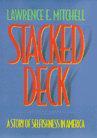

<body bgcolor="#FFFFFF" text="#000000" link="#0000FF" vlink="#CC0000" alink="#CC0000"><center><hr width="350" size="1" align="center" noshade>Reversing the pattern of entrenched individualism in American society<hr width="350" size="1" align="center" noshade><p><a href="https://cdcshoppingcart.uchicago.edu/Cart/ChicagoBook.aspx?ISBN=9781566395922&&PRESS=temple" target="_top">Buy this book!</a> | <a href="https://cdcshoppingcart.uchicago.edu/Cart/Cart.aspx?PRESS=temple" target="_top">View Cart</a> | <a href="https://cdcshoppingcart.uchicago.edu/Cart/Cart.aspx?PRESS=temple" target="_top">Check Out</a></p><p></p></center><!--none//--><h1>Stacked Deck</h1>
<H2>A Story of Selfishness in America</H2>
<h3>Lawrence E. Mitchell</h3>
<P>cloth 1-56639-592-5 $50.50, Feb 98, <FONT COLOR=#990033>Available</FONT>
<br>Electronic Book 1-43990-617-3 $50.50 <FONT COLOR=#990033>Available</FONT>
<BR> 264 pp
6x9
</P><BLOCKQUOTE><I>"Startling consistent economic strength is withering old economic theories in this country. But one fact remains constant: even this spectacular economic performance has left most Americans running in place or not yet on their feet, and that will not change unless the strongest among us are prepared to share their good fortune with the weakest among us. Why we should believe in 'togetherness,' for both pragmatic and moral reasons, is the unique message of this well-wrought, eminently readable work."</I>
<br>&#151<b>Mario M. Cuomo</b><I></I></BLOCKQUOTE>
<p>Americans for generations have been raised with the mantra that we can grow up to be anything we want to be, achieve anything we can imagine. How many of us believe the message? Dream big. It is a fundamental ideology of unbounded opportunity underscoring our drive to succeed. Yet for many Americans the reality, no matter how hard they try, is far from the visions of glory, the unattainable dream of rags to riches that leaves them feeling like failures.
<p>To understand this ideology and its effect on society, Lawrence E. Mitchell instructs us to look at the myth of individualism that pervades our laws, our social thought, our institutions, and our philosophies. It is the touchstone of our national debates on welfare reform, salary equity, FDA regulations, and a criminal defendant's right to a fair trial-and it even infiltrates our private lives every time we argue about the division of household chores or television time. In <I>Stacked Deck</I>, Mitchell shows us how this artificial reality buries the way we truly live.
<p>Mitchell uses examples drawn from history, politics, law, and culture to show how our singular concern with fairness has diminished our sense of vulnerability, so that our ideas of justice, equality, and efficiency are modeled on the capabilities of the strongest in society. Large scale examples-such as blue collar layoffs and corporate downsizing, natural disasters and catastrophic illnesses-illustrate the rickety bridge between comfort and disaster. We must be reminded that we are all vulnerable to the forces of economics, society, politics, and nature. Thus, Mitchell proposes, those who start out at the top tend to stay there, just as the weak tend to remain weak.
<p><I>Stacked Deck</I> does more than outline this problem of American selfishness; it proposes a solution that is nothing less than a massive reconception of the way we relate to one another. Mitchell retains what is productive about the myth of the self-reliant individual, while asserting what is necessary to restore a sense of community. He suggests a sweeping intellectual recovery of fairness available to all levels of American society, thereby reclaiming our true sense of responsibility to others in society.
<BR>&nbsp;<h2>Reviews</h2>
<p><i>"It is less than candid, Mitchell argues, to assert that the playing field of enterprise is level for all of us and the opportunities equal when so many of the potential players, for reasons far beyond their personal control, are unable to play the game at all. The deck is stacked against them."</i>
<br>&#151<b><i>ForeWord</i></b>
<BR>&nbsp;<h2>Contents</h2><P>
<p>Acknowledgments
<br>Series Editor's Foreword
<br>Introduction
<br>1. The Big Myth
<br>2. The Myth's Dark Underside
<br>3. The Myth Lives in the Law: Private Law
<br>4. The Myth Lives in the Law: Public Law
<br>5. Liberal Philosophy's Fundamental Mistake
<br>6. Vulnerability: The Heart of the Matter
<br>7. Vulnerability and American Liberalism
<br>8. The Selfishness Surplus: A Matter of Choice
<br>9. Fairness and Games
<br>10. Fairness, Trust, and Responsibility
<br>Notes
<br>Bibliography
<br>Index
</P><BR>&nbsp;<H2>About the Author(s)</H2>
<table><tr><td valign="top"><img src="/tempress/authors/1349_au.gif" height="90" width="75"></td><td width="100%" valign="middle"><p><B>Lawrence E. Mitchell</B> is John Theodore Fey Research Professor of Law at George Washington University. He is the editor of <I>Progressive Corporate Law</I> and the co-author of <I>Corporate Finance and Governance: Cases, Materials, and Problems for an Advanced Course in Corporations.</I></P></td></tr></table>
<BR><H2>Subject Categories</H2>
<p><A HREF="/tempress/general.html" TARGET="_top">General Interest</a>
<BR><A HREF="/tempress/political.html" TARGET="_top">Political Science and Public Policy</a>
<BR><A HREF="/tempress/law.html" TARGET="_top">Law and Criminology</a>
</p>
<BR><h2 class="inpageheading">In the series</H2>
<P><I><a href="http://www.temple.edu/tempress/america.html" onMouseOver="window.status='Click for other books in this series!'; return true;" onMouseOut="window.status=''; return true;" target="_top">America in Transition: Radical Perspectives</a></i>, edited by Gary L. Francione.
</p><p><I>America in Transition: Radical Perspectives</I>, edited by Gary L. Francione, presents radical interdisciplinary critiques of U.S. social institutions. The books included will analyze and interpret issues of class, race, gender, sexual orientation, ability, and species and suggest solutions for the problems they raise as we enter the twenty-first century.</p>
<p align="center"><a href="https://cdcshoppingcart.uchicago.edu/Cart/ChicagoBook.aspx?ISBN=9781566395922&&PRESS=temple" target="_top">Buy this book!</a> | <a href="https://cdcshoppingcart.uchicago.edu/Cart/Cart.aspx?PRESS=temple" target="_top">View Cart</a> | <a href="https://cdcshoppingcart.uchicago.edu/Cart/Cart.aspx?PRESS=temple" target="_top">Check Out</a></p><p><font face="Arial" size="1"><a href="copyright.html" onMouseOver="window.status='Web Copyright Policy';return true;" onMouseOut="window.status=''" title="Web Copyright Policy">&copy;</a> 2015 <a href="http://www.temple.edu" target="new" onMouseOver="window.status='Link to Temple University home page';return true;" onMouseOut="window.status=''" title="Link to Temple University home page">Temple University</a>. All Rights Reserved. http://www.temple.edu/tempress/titles/1349_reg.html</font></p>